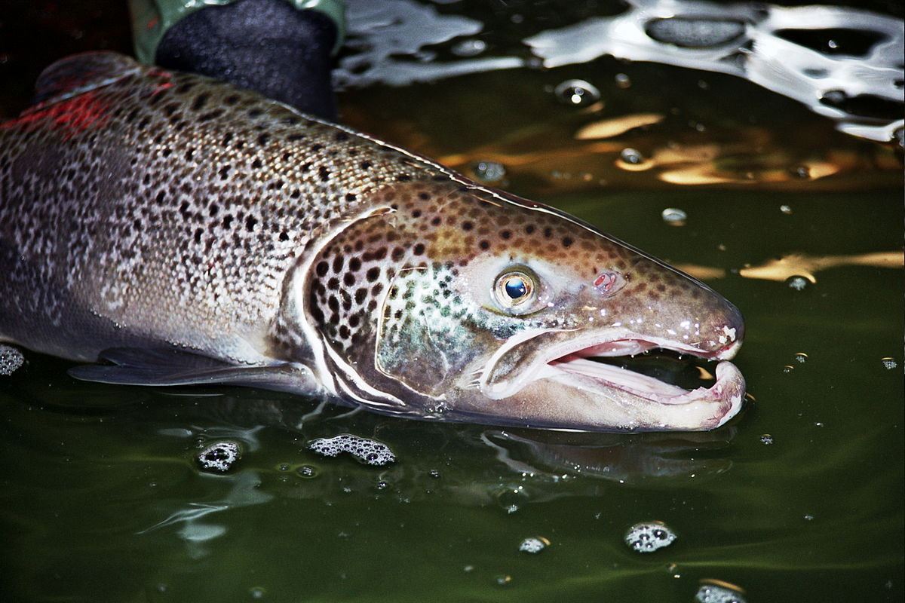

Shallow-Poached Salmon with Leek Beurre Blanc

Description
Shallow poaching under a cartouche, a circle of parchment paper, yields tender fish in minutes. This method works with any mild fish, such as flounder, rockfish, or grouper. If any fillets are of uneven thickness (such as tapered portions near the tail), fold the thin portion underneath to achieve an even 3/4-inch thickness.
Ingredients
- 4 skinless salmon fillets
- 1 1/2 teaspoons fine sea salt, plus more to taste
- ¾ teaspoon black pepper
- 2 tablespoons extra-virgin olive oil
- 6 tablespoons unsalted butter (approx 85g)
- 1 lemon, thinly sliced crosswise
- 1/2 cup thinly sliced leeks or shallot
- 6 thyme sprigs, plus additional thyme leaves for garnish
- 1/2 cup dry white wine
- 1 cup halved cherry tomatoes
- Salad and cooked rice, for serving
Steps
- Preheat oven to 500°F. Sprinkle fillets evenly with salt and pepper.
- Fold a 12-inch square of parchment paper in half from bottom to top to create a rectangle; fold left side over to form a square. Fold bottom right corner up to top left corner to form a triangle. Set the bottom left point of the parchment triangle in the center of a 12-inch ovenproof skillet. Mark where the outer edge of the parchment meets the bottom edge of the skillet; trim parchment along the mark in an arc shape to mimic the curve of the skillet. Snip 1/2 inch from the folded point of the triangle. Unfold cartouche, and set aside.
- Heat oil and 2 tablespoons butter in a 12-inch ovenproof skillet over medium-high until butter is melted. Add lemon slices; cook until lemon flesh is bubbling, about 1 minute. Flip lemon slices. Add leeks to skillet; stir to coat. Cook, stirring occasionally, until leeks are wilted, about 5 minutes. Add thyme sprigs to skillet; top with salmon fillets.
- Add wine to skillet, and top mixture with parchment cartouche. Bring to a simmer over medium-high.
- Carefully transfer skillet to preheated oven. Roast until fish is opaque and flaky, about 6 minutes.
- Carefully remove skillet from oven. Remove cartouche; transfer fillets to a warm platter, and re-cover with cartouche.
- Return skillet to heat over medium; bring pan juices to a light simmer. Add tomatoes and remaining 1/4 cup butter; cook, stirring constantly, until butter is melted and sauce is creamy, about 2 minutes. If desired, add salt to taste. Remove from heat.
- Discard parchment cartouche; divide salad and rice among 4 plates; top rice with fillets. Spoon sauce over fillets; garnish with thyme leaves. Serve immediately.